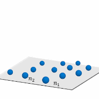

复杂网络 Complex Network¶
图用于表示实体与实体之间的关系，一张图由一些节点和连接节点的边组成。我们常见的互联网、人际关系都可以表示为图。实际应用中，许多复杂数据关系难以使用简单图进行表示。简单图中一条“边”最多连接两个节点，局限性较大。相对而言，超图结构中“超边”能够连接任意多个节点，具有极佳的可扩展性和对复杂关系的建模能力。当面对多个节点拥有同一属性的时候，普通图只能通过多条边将他们连接在一起，而超图结构仅用一条超边就能实现属性的关联建模，因此具有更好的表征能力。由于超图具有建模复杂关联数据的优势，超图学习在近年来备受关注，并在数据挖掘、信息检索、数据分类等任务上得到广泛的应用。在这部分研究内容中，本实验室提出了超图结构学习模型及超图神经网络模型，并针对复杂网络中的安全态势感知开展相关工作。
1.超图结构学习模型¶
基于超图结构进行学习、标签传播等过程，能够实现数据的分类、检索、聚类等任务。基于超图的学习方法的一个关键内容在于如何构建一个合理的超图结构。传统的方法主要通过静态的超图结构进行学习。由于数据标签的不完整、数据特征的噪声等因素，使得直接生成一个合理的超图结构具有较大的困难。针对这一问题，我们探索了动态的超图结构学习及基于张量的超图表示方法。
1.1.动态超图结构学习¶
邻接矩阵是超图表示的常用方法，通过一个N*E的矩阵进行和超图的表示，其中N是节点个数，E是超边的个数，E的数量由数据决定。如图1所示。
图1 超图的邻接矩阵
针对超图结构难以精确反应数据关联的问题，我们提出了动态超图结构学习方法，实现超图结构的动态更新，获得自适应非线性数据建模，如图2所示。不同于传统的静态超图学习方法，我们在学习数据标签投影矩阵的同时同步更新了超图结构，从而更好地反映复杂数据的相关性，具有更佳的数据适应性，同步得到的标签投影矩阵在分类及检索等任务上也能获得更佳的性能。
图2 动态超图结构
1.2.基于张量的超图表示¶
已有的超图学习研究主要通过邻接矩阵进行超图表示。当超图结构动态演变时，其超边的数量和超边的权重是在不断变化的，邻接矩阵并不能很好地表示超图结构的动态更新。同时，基于邻接矩阵的超图表示方法在学习的过程中具有较高的时间复杂度和空间复杂度。针对以上问题，我们基于张量进行超图结构表示，如图3所示，通过张量来构建数据的完全阶关联，并提出了基于张量表示的动态超图学习算法。与已有的超图结构学习方法相比，该模型的目标函数是双凸的，可以通过交替迭代算法有效求得最优解。在四个数据集上的实验结果表明该基于张量的方法相比传统的超图结构学习方法可以有效提高准确率，同时将速度提升1700多倍。
图3 基于张量的超图表示
2.超图神经网络模型¶
图神经网络在近年来得到了较多关注，实现了基于数据关联结构的表示学习。但是受限于复杂关联建模的能力，图神经网络在面向更复杂数据关系的情况下具有一定的局限性。面向更通用的建模及表示学习需求，我们提出了超图神经网络模型，通过超图结构建模数据关系，并通过超图卷积进行表示学习。超图神经网络同时结合了超图结构优秀的建模能力和神经网络强大的学习能力，在处理复杂关联的结构数据时有着极大的优势。超图神经网络能够建模普通卷积神经网络无法处理的非结构化数据以及图神经网络无法处理的非成对连接的节点数据，并且由于超图结构的可拓展性，超图神经网络也是一种处理多模态数据的有效方法之一。
图4 超图神经网络的示意
图5 超边卷积及节点卷积过程的示意
超图神经网络是一个普适的框架，能够在高维数据结构中学习到数据隐藏层的表示。简单来讲，该框架首先通过超边卷积获得复杂关联的表示，并进一步通过节点卷积获得更新的节点表示。我们在引用网络节点分类和可视物体识别两个任务中分别对比了图卷积网络和其他的传统方法，实验结果表明超图神经网络具有更优秀的性能。在多模态数据表示对应用中超图神经网络也显示了较大的性能提升。
与超图结构学习类似，超图神经网络模型也存在对超图结构的优化需求。针对现有的超图神经网络模型难以很好地挖掘和建模数据中的隐式高阶关联的问题，我们提出了动态超图卷积网络模型，如图6所示。该网络在每一层会从特征空间中动态建立超图结构，并基于动态超图结构提出了由节点卷积和超边卷积构成的超图卷积用于特征传播。相对对静态的超图神经网络模型，动态神经网络模型能够获得显著的性能提升。在多模态社交媒体数据的情感预测任务中取得当前最佳的性能，并比传统的超图结构学习方法获得了2300倍的速度提升。
图6 动态超图演化及动态超图卷积
3.网络安全态势感知¶
目前针对网络流量数据中异常数据的检测，现有的检测方法，主要包括固定规则设定，黑白名单过滤以及专家人工检测等方模式，存在着大量误判和判别时间长，难以检测未知类型异常数据以及难以应对零日漏洞等问题。针对网络流量增大，数据复杂度增高的新环境新要求，我们提出基于网络数据的特征表示优化以及特征关系挖掘的安全态势感知方法。
网络流量数据种类繁多，数据量庞大，以及数据不平衡，这也是数据普遍存在的特征，所以我们要实现数据特征刻画的同时进一步实现特征优化。其下包括两个主要攻克点，针对工业互联网中存在的非结构化数据以及结构化数据，我们分别提取特征，根据信息检测需求，进行信息融合，得到融合数据特征。为了进一步解决数据不平衡及冗余现象，对数据特征进行优化，获得稳定近邻空间，减少数据冗余度，提高检测准确率。随着网络向制造业的渗透，大量网络数据采集频率显著提升，采集范围不断扩大，数据的复杂度也逐渐增高，且网络中的数据大多为非结构化数据，其格式多种多样，遵守的协议也各不相同，相对于结构化信息更难标准化和理解。因此，亟需对网络流量数据进行特征刻画及优化。我们提出了迭代度量学习方法用于构建数据空间框架，提高数据空间的合理性，降低检测空间维度，减小冗余数据，提高检测速率，降低计算量负担，实现网络流量数据有针对性的刻画和特征提取。
由于目前网络数据中存在大量的结构化和非结构化数据，其之间关系难以利用普通的固定规则设定来进行识别。利用传统常用方法难以挖掘高阶信息，缺乏对关键异常信息的识别关注度。针对网络流量数据之间存在的复杂关联，我们利用超图结构挖掘数据中的高阶关联关系。由于网络环境异常数据的特殊性，我们在检测过程中增加对异常数据的敏感性挖掘，从而构建代价敏感的超图结构，增强系统对异常数据检测的鲁棒性，对异常数据进行识别。
图7 数据驱动的安全态势感知
论文列表
|
Yuxuan Wei,Jianwen Jiang, Yifan Feng, Jingxuan Cao, Yue Gao. |
|
Heyuan Shi, Yubo Zhang, Zizhao Zhang, Nan Ma,
Xibin Zhao, Hai Wan, Yue Gao, Jiaguang Sun. |
|
Rongrong Ji, Fuhai Chen, Liujuan Cao, Yue Gao.
|
|
Zizhao Zhang, Haojie Lin, Yue Gao. |
|
Zizhao Zhang, Yubo Zhang, Xibin Zhao, and Yue
Gao.
|
|
Jin Huang, Yue Gao, Sha Lu, Xibin Zhao,
Yangdong
Deng, Ming Gu. |
|
Xibin Zhao, Nan Wang, Heyuan Shi, Hai Wan, Jin
Huang, Yue Gao.
|
|
Nan Wang, Xibin Zhao, Yu Jiang, Yue Gao. |
|
Fuhai Chen, Rongrong Ji, Jinsong Su, Donglin
Cao,
Yue Gao.
|
|
Zizhao Zhang, Haojie Lin, Junjie Zhu, Xibin
Zhao,
Yue Gao. |
|
Zizhao Zhang, Haojie Lin, Xibin Zhao, Rongrong
Ji, Yue Gao.
|
|
Yue Gao, Hanwang Zhang, Xibin Zhao, and
Shuicheng
Yan.
|